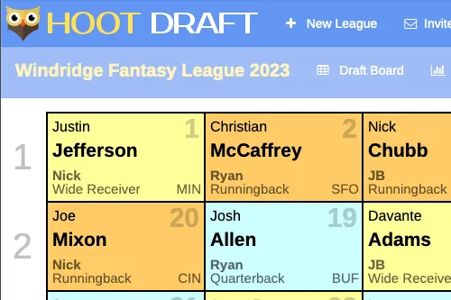
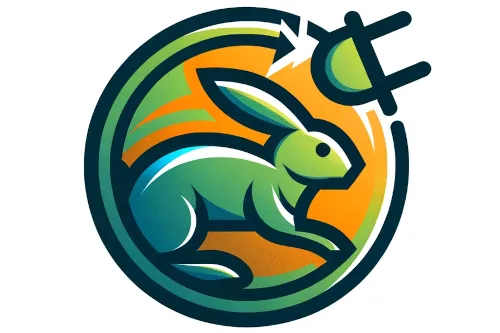
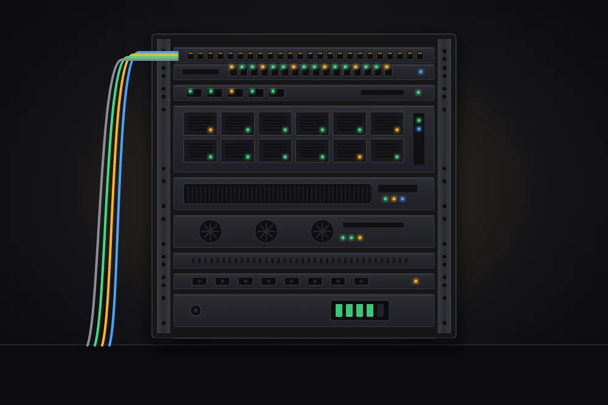

Languages
TypeScript and C# are where I've shipped the most. I've also made production contributions to Rust services, and worked in PHP, Ruby, and Java along the way.
I've been building software professionally for sixteen years, and I still think the job is fundamentally about people. I've shipped at a services shop, at Yahoo Sports, and at Fieldwire — with engineers, designers, PMs, and QA in the room, and users on my mind the whole way.
Still building for real people, still learning from the team around me.
All the world is my school, and all humanity is my teacher.

Hoot Draft (formerly PHP Draft) is an open-source fantasy sports draft tool built for SaaS deployment. It lets league commissioners run offline drafts in a presenter-style mode, independent of the in-season platform they use.
Currently migrating the backend from Silex to Symfony's micro-kernel, followed by a modern Angular upgrade. The production server is intentionally offline during the transition. Review the source at Github.

CompareHare is a price-tracking app I built for myself. It watches the utility rates and products I care about, and pings me when something crosses the threshold I've set — originally for electric and gas, expanded to large home appliances in 2022.
I'm currently rewriting the backend in Rust. Not as an exercise, but because I wanted a real system to learn on: scheduled jobs, scrapers, preference matching, and data I actually rely on. The commit history is the point.

I built this as both a development sandbox and family infrastructure. It runs Unraid behind my firewall to host Docker containers for CI (Jenkins), databases (MariaDB, Postgres), and web services (Nginx, MQTT, Redis).
On the personal side: a Plex media server, Home Assistant, recipe storage, and Frigate with machine learning tied to security cameras that alert when the mail arrives or someone's on the porch. I test stacks here before anything touches production.